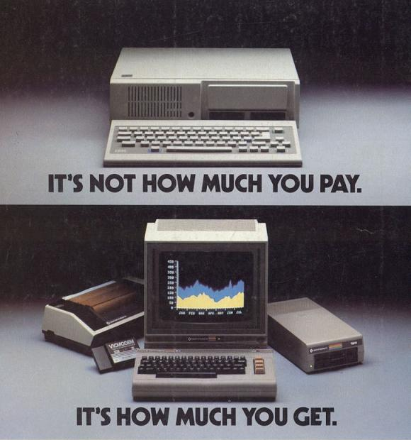

 In 1981, Albert Charpentier from MOS Technology, a chip provider to companies like Atari, Commodore, Nintendo, and Texas Instruments, wanted to make the next video and sound chips for the next great video games. In November of that year, the chips had been designed, but the Commodore president decided to not use them in the declining video game market. Instead, a consumer personal computer with 64 kilobytes of RAM would be created and shown at the January 1982 Consumer Electronics Show. By August of 1982, the Commodore 64 was in full production and distribution. The lower price point of the computer ("under $600" in a time where most computers were at MRSPs above or at the $999/$1000 price point) was the main appeal of the C64. The operating system allowed for BASIC programs to be easily created and executed, essential parts of hardware, like the monitor, were built in, and cassette tapes and floppy disks were simple to plug and play off of. All of these consumer-friendly qualities earned it the world record for most sold computer model, with over 10 million units sold.